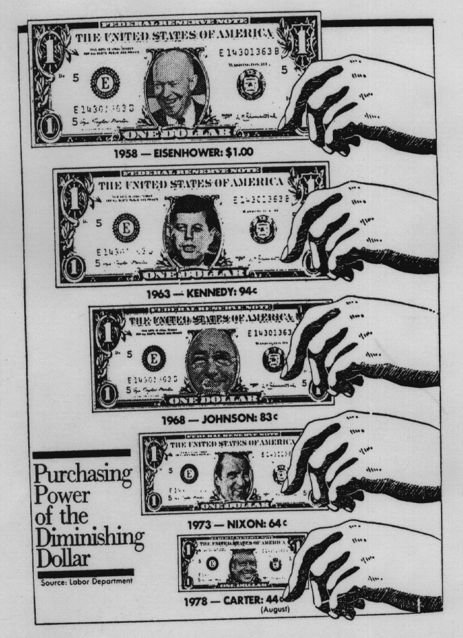

Stat 250, Section 003, Homework Assignment 5 (Due 3/3/99 in class)
- 0) Please work on Exercise 2 from Homework Assignment 4. (6 points)
- 1) Please work on the following textbook exercises in
Moore:
- Exercise 1.56, 1.60, 1.61, 1.62 (4 points)
- Exercise 1.65, 1.66, 1.69 (6 points)
- Exercise 2.4, 2.5, 2.6 (6 points)
- 2) Below is another graphic taken from Wainer's
`Visual Revelations' book, first published in the
Washington Post. First guess under which US President the
Dollar lost most of its value. Then redraw the graphic
in a better way. It might be reasonable as well to look
into a history book or find a source with respect to
US Presidents on the Web... After redrawing your graphic
answer the question again under which US President the
Dollar lost most of its value. Can you explain the
main problem with the initial graphic?

(4 points)